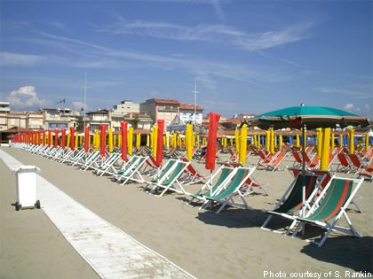

The summer holiday period in Italy is a time when the country almost comes to a standstill. Most Italians go on holiday in the month of August and the preferred destination is il mare. Ferragosto represents the beginning of the holiday period.
In Italia, l'estate è il periodo quando circa 60% degli italiani parte in vacanza. Il motivo principale è la voglia di rilassarsi.
L'estate è sinonimo di riposo. La gente sogna la vacanza al mare. La maggioranza degli italiani sceglie la vacanza al mare.
Italia, Francia e Spagna sono le mete preferite perché offrono un mix ideale di relax, mare e sole.
Ferragosto è il quindici agosto.
È il simbolo dell'estate e delle vacanze. Ferragosto rappresenta il punto di riferimento per gli italiani che sognano il riposo dopo un anno di lavoro.
Traffico intenso durante questo periodo. Città spopolate e località turistiche super affollate. Questo è lo scenario tipico di Ferragosto!
Andare alla spiaggia is a popular activity in both Australia and Italy. Italians also refer to going to the beach as andare al mare.
Going to the beach, usually brings to mind le vacanze e sole sabbia mare. The concept of going to the beach in Italy is quite different though!
Italians, generally go to a beach destination for holidays - a week or two or even for a longer period. Unless they live on the coast, day trips to the beach are not common.
During the summer months Italian beaches and seaside resorts are very crowded and teeming with life. Often you have to pay to get on to the beach or pay to use the deck chairs and umbrellas!!
